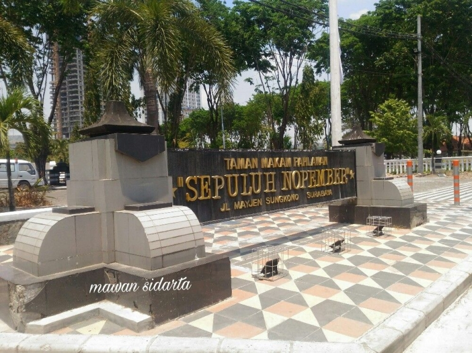
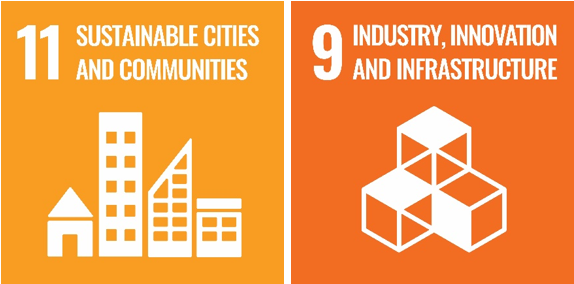
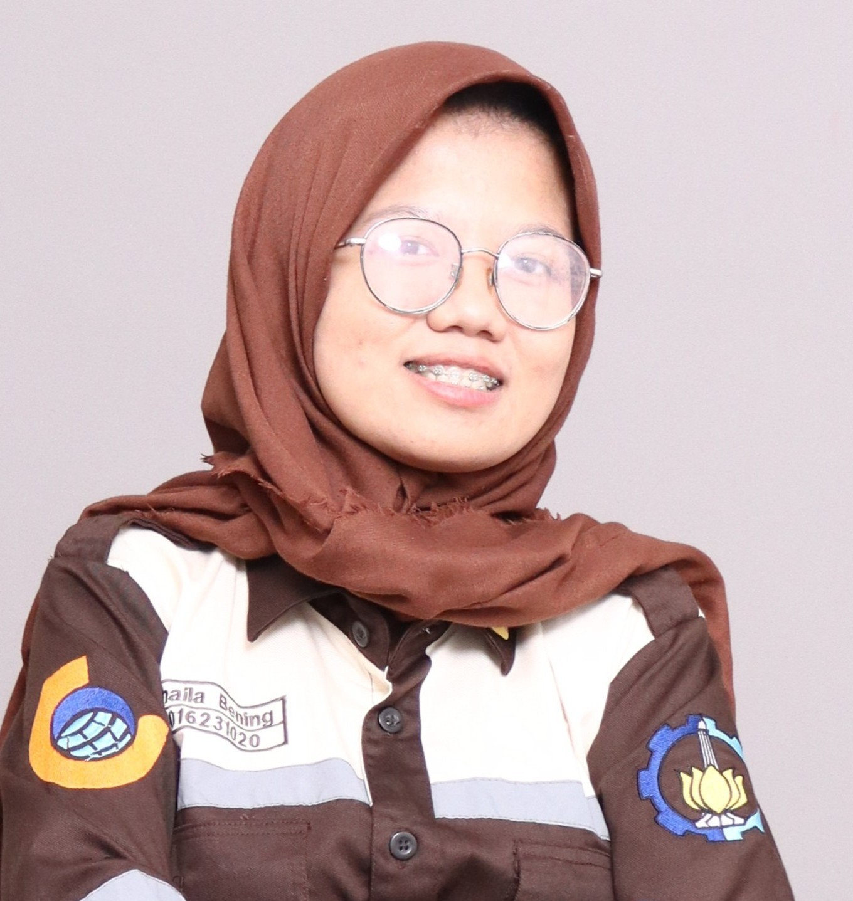
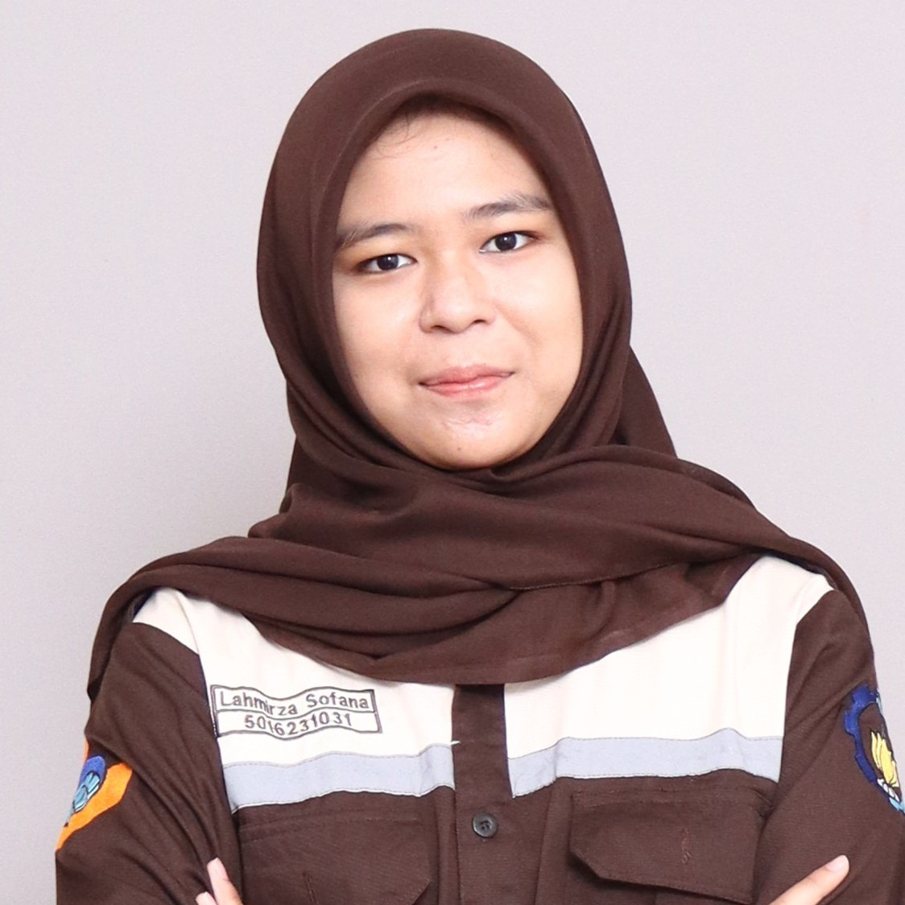
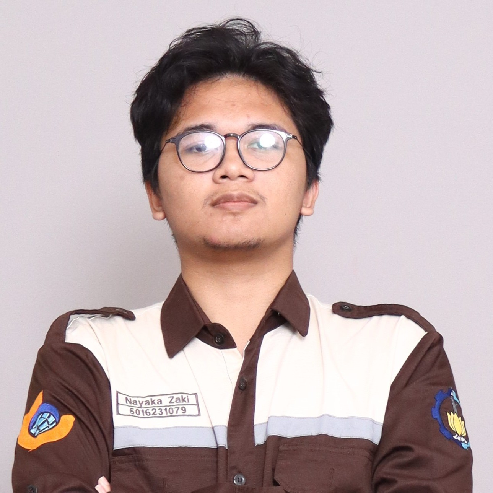
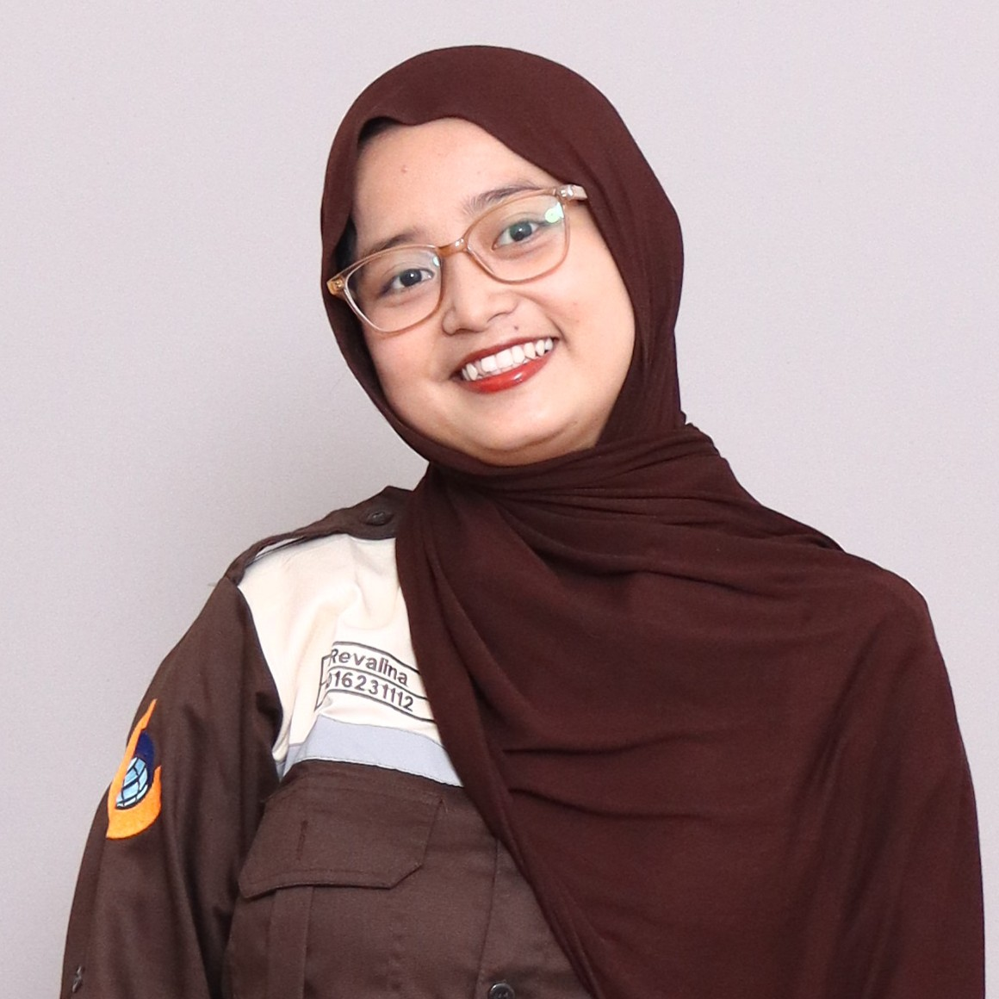

Sistem Informasi Geospasial berbasis WebGIS yang menyajikan data spasial kawasan Taman Makam Pahlawan Sepuluh Nopember Surabaya secara interaktif.
Jelajahi PetaPlatform WebGIS ini dirancang agar siapa pun dapat mengakses informasi pahlawan nasional.
Kawasan ini tidak hanya memiliki nilai historis, tetapi juga menjadi simbol penghormatan, edukasi, serta refleksi bagi generasi penerus untuk mengenang jasa para pahlawan.
Melalui pengelolaan yang baik, Taman Makam Pahlawan diharapkan dapat terus menjadi ruang publik yang edukatif, tertata, dan memiliki nilai kebangsaan yang kuat.
Untuk pengajuan izin kegiatan, informasi lebih lanjut, maupun koordinasi teknis, masyarakat dapat menghubungi pihak pengelola melalui kontak berikut.
Visualisasi tata letak makam berbasis teknologi GIS yang akurat
Mengenal Sejarah Taman Makam Pahlawan
Informasi Kontak & Perizinan Kegiatan
Taman Makam Pahlawan Sepuluh Nopember Surabaya didirikan sebagai bentuk penghormatan kepada para pejuang yang gugur dalam Pertempuran Surabaya pada 10 November 1945, yang menjadi salah satu peristiwa penting dalam mempertahankan kemerdekaan Indonesia. Setelah pertempuran tersebut, banyak korban dari pihak pejuang yang dimakamkan secara tersebar di berbagai lokasi. Untuk memberikan penghormatan yang lebih layak dan terpusat, pemerintah kemudian melakukan penataan dan pemindahan makam para pahlawan ke dalam satu kawasan khusus yang dirancang sebagai taman makam pahlawan. Taman Makam Pahlawan ini tidak hanya berfungsi sebagai tempat pemakaman, tetapi juga sebagai simbol penghormatan bangsa terhadap jasa para pahlawan.
Seiring berjalannya waktu, kawasan ini terus mengalami pengembangan dan penataan. Pemerintah secara rutin melakukan pemeliharaan agar kawasan tetap tertata rapi dan layak sebagai tempat ziarah serta refleksi sejarah. Sampau saat ini, berfungsi sebagai tempat ziarah, lokasi upacara peringatan Hari Pahlawan, serta sarana edukasi sejarah bagi masyarakat. Keberadaannya menjadi pengingat akan pentingnya semangat perjuangan dan nasionalisme bagi generasi penerus bangsa.
Sumber Mengenal Taman Makam Pahlawan Sepuluh November Surabaya, Wisata Bersejarah yang Sarat Makna

Visualisasi tiga dimensi kawasan lahan kosong di Taman Makam Pahlawan Sepuluh Nopember Surabaya sebagai rekomendasi penataan dan pengembangan kawasan secara optimal dan berkelanjutan.
Jelajahi SiteplanCuplikan Siteplan 3D Kawasan Taman Makam Pahlawan
Penelitian kami ini selaras dengan tujuan Pembangunan Berkelanjutan (SDGs) ke-9 dan 11 dengan berfokus kepada pentingnya inovasi infrastruktur digital serta pengelolaan kawasan perkotaan yang inklusif, aman, dan berkelanjutan.
Fokus kami, yaitu pada SDGs 9 – Industri, Inovasi, dan Infrastruktur Pengembangan sistem pemetaan Taman Makam Pahlawan Sepuluh Nopember melalui WebGIS, siteplan, dan peta interaktif merupakan inovasi geospasial yang memperkuat infrastruktur informasi kawasan. Pemanfaatan teknologi pemetaan modern mendorong pengelolaan ruang yang lebih efisien, terstruktur, dan berkelanjutan. HERO-MAP sebagai platform WebGIS merupakan wujud nyata inovasi teknologi geospasial dalam pengelolaan data kawasan bersejarah secara digital dan akurat.
Sementara itu, SDGs 11 – Kota dan Pemukiman yang Berkelanjutan Revitalisasi Taman Makam Pahlawan Sepuluh Nopember dengan WebGIS, siteplan, dan peta interaktif dan optimalisasi fungsi memorial mendukung terciptanya ruang publik yang tertata, informatif, dan melestarikan warisan sejarah. Pendekatan ini memperkuat keamanan, inklusivitas, dan keberlanjutan kawasan perkotaan.
Dengan mengintegrasikan teknologi pemetaan berbasis web, HERO-MAP berkontribusi dalam mewujudkan kota yang cerdas, inklusif, dan berwawasan sejarah sesuai dengan semangat SDGs global.

Tujuan Pembangunan Berkelanjutan (SDGs 9, 11).



